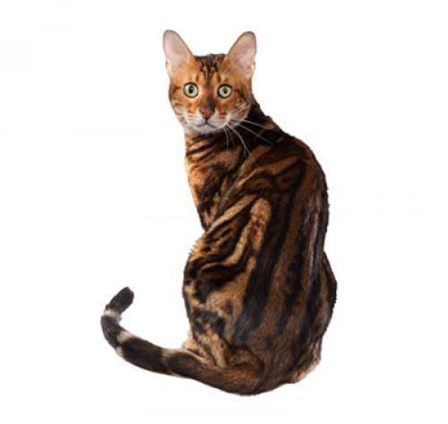

Persian Cat

The Persian cat is a long-haired breed of cat characterized by its round face and short muzzle. It is also known as the "Persian Longhair" in the English-speaking countries.
The first documented ancestors of the Persian were imported into Italy from Iran (historically known as Persia in the west) around 1620. Recognized by the cat fancy since the late 19th century, it was developed first by the English, and then mainly by American breeders after the Second World War.
Maine Coon
The Maine Coon is the largest domesticated cat breed. It has a distinctive physical appearance and valuable hunting skills. It is one of the oldest natural breeds in North America, specifically native to the US state of Maine, where it is the official state cat.
The Maine Coon is a large and sociable cat, hence its nickname, "the gentle giant". It is characterized by a prominent ruff along its chest, robust bone structure, rectangular body shape, an uneven two-layered coat with longer guard hairs over a silky satin undercoat, and a long, bushy tail.
Ragdoll

The Ragdoll is a cat breed with a color point coat and blue eyes. They are large and muscular semi-longhair cats with a soft and silky coat. Developed by American breeder Ann Baker in the 1960s, they are best known for their docile and placid temperament and affectionate nature.
The name "Ragdoll" is derived from the tendency of individuals from the original breeding stock to go limp and relaxed when picked up.
Siamese Cat
The Siamese cat is one of the first distinctly recognized breeds of Asian cat. Derived from the Wichianmat landrace, one of several varieties of cat native to Thailand (formerly known as Siam), the original Siamese became one of the most popular breeds in Europe and North America in the 19th century.
The carefully refined, more extreme-featured, modern-style Siamese is characterized by blue almond-shaped eyes; a triangular head shape; large ears; an elongated, slender, and muscular body; and various forms of point colouration.
American Shorthair

Although it is not an extremely athletic cat, the American Shorthair has a large, powerfully-built body. According to the breed standard of the Cat Fanciers' Association, the American Shorthair is a true breed of working cat. They have round faces and short ears.
According to the CFA, American Shorthairs are low-maintenance cats that are generally healthy, easy-going, affectionate with owners and social with strangers.
Munchkin Cat
The Munchkin cat or Sausage cat is a newer breed of cat characterized by its very short legs, which are caused by a genetic mutation. The Munchkin is considered to be the original breed of dwarf cat.
Much controversy erupted over the breed when it was recognized by The International Cat Association (TICA) in 1995 with critics voicing concern over potential health and mobility issues
Bengal

The Bengal cat is a domesticated cat breed created from hybrids of domestic cats, especially the spotted Egyptian Mau, with the Asian leopard cat (Prionailurus bengalensis).
The breed name comes from the leopard cat's taxonomic name. Bengals have a wild appearance; their golden shimmer comes from their leopard cat ancestry, and their coats may show spots, rosettes, arrowhead markings, or marbling.
They are an energetic breed which needs much exercise and play.
Russian Blue

The Ragdoll is a cat breed with a color point coat and blue eyes. They are large and muscular semi-longhair cats with a soft and silky coat. Developed by American breeder Ann Baker in the 1960s, they are best known for their docile and placid temperament and affectionate nature.
The name "Ragdoll" is derived from the tendency of individuals from the original breeding stock to go limp and relaxed when picked up.
Sphynx Cat
The Sphynx cat is a breed of cat known for its lack of coat (fur). Hairlessness in cats is a naturally occurring genetic mutation; however, the Sphynx cat, as a breed, was developed through selective breeding, starting in the 1960s. The skin should have the texture of chamois leather, as it has fine hairs, or the cat may be completely hairless. Whiskers may be present, either whole or broken, or may be totally absent. The cats have a narrow, long head and webbed feet.